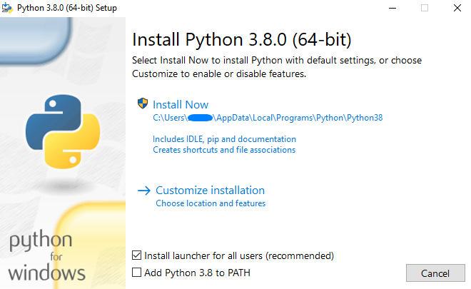
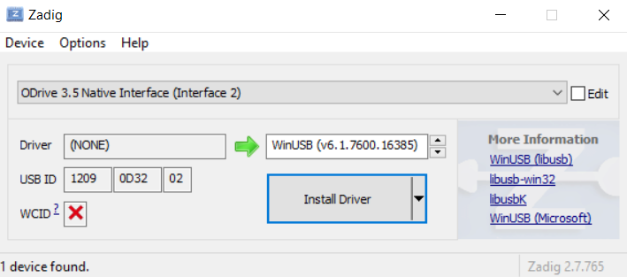
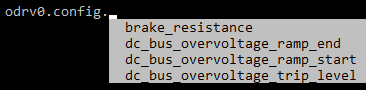

You can install the odrivetool in a few ways, in the following sections two methods are explained: Windows standalone Python and Ubuntu.
Start by installing Python, it is recommended to use version 3.8.6 to have the best experience.
Check the box that adds Python to the PATH and click Install Now.
Once the installation is complete, you can open the command prompt (cmd) and enter the following command:
pip install --upgrade odriveTo start the odrivetool, you enter the following command in the command prompt (cmd):
odrivetoolIf you get the message "Could not open USB device: -5", you have to install Zadig tool and change the Native Interface to WinUSB:
Congratulations, you've successfully installed the odrivetool.
First of all, you need to install Ubuntu, you can use VMware to install it as a virtual machine.
Once that is installed, you can start to install the ODrive software by pasting these command into the terminal (opened with ctrl + alt + t).
(If there are y/n questions during the installation, answer y)
Install Python:
sudo apt install pythonInstall pip:
sudo apt install pipInstall ODrive:
pip install --upgrade odriveTo make sure the odrivetool recognizes your board:
sudo apt install curlsudo bash -c "curl https://cdn.odriverobotics.com/files/odrive-udev-rules.rules > /etc/udev/rules.d/91-odrive.rules && udevadm control --reload-rules && udevadm trigger"Reboot the system:
sudo rebootYou can start the odrivetool using the terminal:
odrivetoolCongratulations, you've successfully installed the odrivetool.
ODrive has a lot of settings, but there are a few that are necessary to get it working (and not break anything), these will be discussed in this section.
When the board is connected, it shows the id, the id is odrv0 if there's only one board, with axis0 and axis1 you select the axis.
When entering or looking for commands, you can use the tab button to see all available options, use the arrow keys to navigate, for example:
If something goes wrong, for example the motor is not in closed loop anymore, you can check errors using:
dump_errors(odrv0)Set your encoder counts per revolution (CPR = 4PPR):
odrv0.axis0.encoder.config.cpr = Set the current limit:
odrv0.axis0.motor.config.current_lim = Set the velocity limit:
odrv0.axis0.controller.config.vel_limit = Set the number of pole pairs (# pole pairs = # magnets / 2):
odrv0.axis0.motor.config.pole_pairs = If you are using a brake resistor, set the variable to true:
odrv0.config.enable_brake_resistor = TrueTo get everything working, you can try the calibrations first and when they work, you can enable them on startup:
First try the full calibration, if that doesn't work, you can try them each separately:
odrv0.axis0.requested_state = AXIS_STATE_FULL_CALIBRATION_SEQUENCEMotor calibration (this measures phase resistance and inductance):
odrv0.axis0.requested_state = AXIS_STATE_MOTOR_CALIBRATIONEncoder offset calibration (this measures the offset between the electrical and encoder position):
odrv0.axis0.requested_state = AXIS_STATE_ENCODER_OFFSET_CALIBRATIONIf you want to use an index pin:
odrv0.axis0.requested_state = AXIS_STATE_ENCODER_INDEX_SEARCHNow you can enter closed loop control, when you turn the motor, it should return to the original position:
odrv0.axis0.requested_state = AXIS_STATE_CLOSED_LOOP_CONTROLNow that all this is working, you can save the motor calibration and encoder offset (if you have an index pin or absolute encoder) so it doesn't do it every time, but it's not a necessity:
odrv0.axis0.motor.config.pre_calibrated = Trueodrv0.axis0.encoder.config.pre_calibrated = TrueYou can enable these commands to run at startup.
If your motor calibration is not saved, you can enable it on startup:
odrv0.axis0.config.startup_motor_calibration = TrueThe same is true for the encoder offset:
odrv0.axis0.config.startup_encoder_offset_calibration = TrueIf you are using an index, you can also enable the search on startup:
odrv0.axis0.config.startup_encoder_index_search = TrueNow you can enable closed loop on startup:
odrv0.axis0.config.startup_closed_loop_control = TrueSave your configuration and reboot the ODrive, the board should run the enabled startup functions:
odrv0.save_configuration()odrv0.reboot()Now the basics are set up, you can start using the board, there are a few control modes: velocity, torque, position.
To enter velocity control:
odrv0.axis0.controller.config.control_mode = CONTROL_MODE_VELOCITY_CONTROLTo set the desired speed:
odrv0.axis0.controller.input_vel = To enter torque control:
odrv0.axis0.controller.config.control_mode = CONTROL_MODE_TORQUE_CONTROLTo set the desired torque (you can set the torque constant using odrv0.axis0.motor.config.torque_constant):
odrv0.axis0.controller.input_torque = To enter position control:
odrv0.axis0.controller.config.control_mode = CONTROL_MODE_POSITION_CONTROLTo set the desired position:
odrv0.axis0.controller.input_pos = There are a lot more settings, you can find them using the tab button as mentioned before, and you can take a look in the ODrive docs.